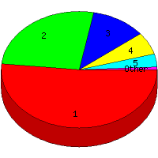

Week of 6/20/2010 to 6/26/2010: Top
6 of
6 File Types (Extensions)
Sorted by Access Count
Individual file types as determined by file extensions. All URLs that
do not contain an extension are counted as directories.

| Rank |
Type |
Accesses |
% |
Bytes |
% |
| 1 |
html
|
74 |
51.75 |
1,207,158 |
61.42 |
| 2 |
Directory (folder)
|
38 |
26.57 |
192,848 |
9.81 |
| 3 |
htm
|
16 |
11.19 |
139,094 |
7.08 |
| 4 |
ico
|
9 |
6.29 |
12,654 |
0.64 |
| 5 |
pdf
|
5 |
3.50 |
408,036 |
20.76 |
| 6 |
com
|
1 |
0.70 |
5,672 |
0.29 |